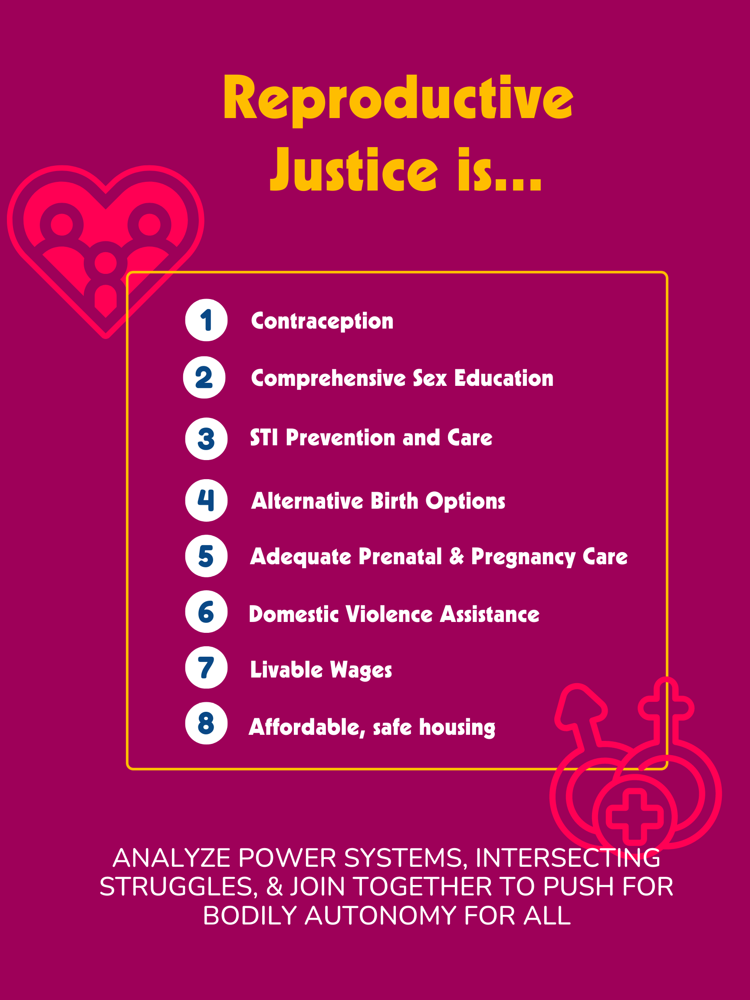

The fight for abortion justice is not new, but the conditions of our fight continue to change as the political landscape evolves. We need your ongoing, principled, and steadfast commitment to funding abortion now more than ever.
Fund Abortion Now! Issue #2
But how did we get here? Some context:
In early 2022, anticipating the likely overturn of Roe v. Wade, a group of Resource Generation member leaders launched Fund Abortion Now!: a campaign to move $2 million to the National Network of Abortion Funds (NNAF) and its local and regional affiliates over 3 years.
When the Dobbs ruling arrived in June 2022, it quickly widened the existing disparities in access to reproductive care and abortion, particularly along the lines of class, race, and geography. It comes as no surprise that the demand for abortion has only increased since then. Abortion funds continue to fulfill an essential role in helping those most impacted by Dobbs – namely communities left behind by institutionalized violence and racial capitalism – access abortion care.
Since the launch of this campaign, we are proud to share that RG members, constituents, allies, and friends have pledged a total of $1,799,188.40 to our campaign partner NNAF and its local affiliates.
In the year following the Dobbs decision, abortion funds reported a 39% increase in requests for support to access abortions. However, despite an initial wave of rapid response funding (often called rage giving) for reproductive justice efforts in the immediate wake of the ruling, broader and more sustained support for this work has dwindled.
The bottom line: there is a massive need to continue mobilizing resources to frontline reproductive justice actors.
Action Steps
- Give general operating dollars directly to NNAF or renew your recurring financial support here. Find your local NNAF member Abortion Fund here and give to them directly.
- Give to NNAF’s Collective Power Fund here, which concentrates on funds in the South and Midwest, where it’s often most difficult to access abortion.
- Strategize and prioritize your giving: focus on liberatory, Black-led reproductive justice organizing and abortion funds in the South such as Feminist Women’s Health Center, Yellowhammer Fund, SHERo Mississippi, and Birthmark Doula Collective.
Funding & redistribution best practices to keep in mind:
- Support long-term movement building with recurring funding (we recommend a 3 year commitment).
- Provide unrestricted general operating funding.
- If possible, avoid anonymous funding to destigmatize abortion and funding abortion access.
- In addition to funding the essential work of abortion funds, be sure to support other reproductive justice organizations (some of which are listed below).
You can also become an NNAF individual member to engage further with organizing and movement-building.
This zine explores recent data, research, and information regarding reproductive justice and abortion access in the U.S. Read on to learn more about the critical work abortion funds are doing, particularly in the South.

Voices from the Field: Speaking with Those on the Front Lines
We spoke with folks working with and for abortion funds to better understand the reproductive justice landscape in 2024. Throughout the zine, you will hear from them about their experiences and the experiences of their organizations two years after the Dobbs decision.
The Current Landscape
State Abortion Bans Passed in 2023
Many state legislatures with anti-abortion majorities prepared for Roe v. Wade’s end by passing their own trigger bans. Once the Dobbs decision was reached, they used those trigger bans to push for completely banning abortion. Other state legislative sessions banned abortion at specific gestational limits instead of outright bans.1
- Florida: A 6-week abortion ban was signed into law on April 13, 2023, intended to go into effect following a ruling from the Florida Supreme Court on a case considering the legality of a 15-week abortion ban passed in 2022. That case may be decided in June; if the 15-week abortion ban is upheld, the 6-week ban will go into effect 30 days later.2
- Nebraska: A 6-week abortion ban failed when one Republican legislator voted against it, earning national headlines; however, a ban on abortion at 12 weeks passed as an amendment to a ban on gender-affirming care and took effect on May 22, 2023.
- North Carolina: A 12-week abortion ban was ultimately enacted following a legislative override of a veto by Gov. Roy Cooper (D). The law is scheduled to go into effect on July 1, 2024.
- South Carolina: A 6-week abortion ban advanced through the legislature, but was stopped by a bipartisan group—the “Sister Senators” — whose commitment to blocking the ban countered the legislature's Republican supermajority. After Gov. Henry McMaster (R) called a special session, the abortion ban was signed into law on May 25, 2023, only to be temporarily blocked following a legal challenge. Abortion remains legal in the state while litigation continues.
- Utah: Gov. Spencer Cox (R) signed a law in March 2023 that would have mandated the closure of all abortion clinics in the state once the current clinic licenses expired, ending access to virtually all abortions across the state at that time. In May 2023, a judge temporarily blocked this law from taking effect.
- Wyoming: An additional abortion ban was enacted, despite the ongoing legal challenge to the state’s trigger ban, and it also faces legal challenges. Abortion remains legal while litigation continues.
The highest number of abortions in a decade occurred in 2023. Per reporting on their Monthly Abortion Provision Study data, the Guttmacher Institute estimates that the total number of abortions in the United States was 1.04 million in 2023, a likely undercount due to the study’s focus on abortions occurring within the formal health care system. This represents an 11% increase since 2020 and the highest estimated count in over a decade.
But as abortion fell out of headlines, these monumental efforts have faltered due to a lack of sustained giving. As reported in January 2024, abortion funds nationwide have experienced a significant decrease in funding and numerous funds have had to resort to temporary closures, with some halting operations multiple times within the last year.

Reproductive Justice and the Black Community

Black women’s reproductive health has long been inhibited by white supremacy, patriarchy, and capitalism. Even by controlling for class and education, Black women and birthing folks are 3x more likely to die from pregnancy than their white counterparts in the U.S.
Black Americans’ discrimination in healthcare is connected to centuries of structural racism within political and economic institutions, including chattel slavery, Jim Crow, mass incarceration, and eugenics.
The very state of being Black in a racist society can cause high chronic stress and thus exacerbate existing health conditions. This leads to higher rates of pregnancy risks such as hypertension, preeclampsia, and hemorrhage, thus also increasing mortality rates for both Black folks and their babies.
The American Society of Anesthesiologists conducted an 11-year analysis of over 9 million hospital deliveries which found that Black women had a 53% higher risk of dying in a hospital setting during childbirth, regardless of income level, insurance type, or any other social driver of health.3
31% of Black women who delivered in hospitals reported they were treated poorly because of a difference of opinion with their caregivers about the right to care for themselves or their baby.4
This often leads to Black patients having inadequate pain management, being dismissed, and being forced to undergo undiagnosed illnesses without treatment. 5
Nearly 1 in 4 Black women report at least one form of mistreatment by health care providers. They are 2x more likely than white women to report that a healthcare provider ignored them, refused a request for help, or failed to respond to requests for help in a reasonable amount of time. 6

How The Breakdown of Roe v. Wade Harms Black Folks and People of Color
60% of Black women and birthing people ages 18-49 live in states with abortion bans or restrictions, compared to 53% of white women and birthing people.
The Dobbs decision has made Black women and birthing people face even more disproportionate access barriers due to systematic disparities in health coverage and limited financial resources.
Federal policy prevents funding for abortion, including in Medicaid. Black, American Indian or Alaskan Native (AIAN), Native Hawaiian or Other Pacific Islander (NHPI), and Hispanic women are more likely than their White counterparts to be covered by Medicaid, which provides limited coverage for abortions.
As of 2024, among the 36 states that do not have complete abortion bans, only 17 use state budgets to finance abortions beyond the Hyde Amendment limitations for Medicaid enrollees.The rest of the states that do follow Hyde limits require Medicaid patients to pay out of pocket for an abortion unless they meet the Hyde Amendment’s narrow conditions.7
Not only did 2021 see an increase in the median self-pay cost of getting an abortion from $500, but costs also fluctuate depending on the location, type of abortion, and if an individual has coverage.8
Additionally, across racial and ethnic groups, women and birthing people who live in states with total abortion bans are more likely to be poorer than those in states that allow abortions after 22 weeks.This further inhibits traveling to other states for an abortion, especially due to high transportation, lodging, and childcare costs associated with travel.9
Reproductive Justice and the Indigenous/Native Community
RJ in the Indigenous and Native community is entirely entwined in the United States’ history of colonization, oppression, and genocide.
A study by the U.S. General Accounting Office (GAO) found that 4 of the 12 Indian Health Service regions sterilized 3,406 American Indian women without their permission between 1973 and 1976.10
Today, a majority of American Indians and Alaska Natives get their healthcare from the Indian Health Service, a division of the Department of Health and Human Services. But for decades, abortions have largely been excluded from that health care because of the Hyde Amendment, which prohibits the use of federal dollars on abortions except in the cases of rape, incest, and threats to the mother’s life.11
A 2002 survey by the Native American Women’s Health Education Resource Center – one of few existing sources of abortion data as it relates to Indigenous women in the US – found that 85% of Indian Health Service facilities did not provide access to abortion services or refer patients to abortion providers, even in situations allowed under the Hyde Amendment. Little has changed in the 20 years since.12
As leaders in reproductive justice and environmental justice, Indigenous communities have built community networks to address gaps in access to care, systemic and state-sanctioned violence and oppression, and erasure of their communities.13
Indigenous Women Rising: An Indigenous-Led Reproductive Justice Organization
Indigenous Women Rising is an Indigenous-led full-spectrum reproductive justice organization. They help Indigenous families pay for and access abortion care, menstrual hygiene, and midwifery funding and support.14
Rachael Lorenzo (Mescalero Apache/Laguna Pueblo/Xicana) started Indigenous Women Rising in 2014 as a campaign to bring attention to the fact that indigenous women and people who rely on Indian Health Services for healthcare were being denied access to Plan B, a form of emergency contraception. This was a huge issue considering the disproportionately high rates of domestic violence and sexual assault on reservations and the limited capability of tribes to prosecute non-Native offenders.
Action Steps
- Donate directly to Indigenous Women Rising and/or start a recurring donation here.
- Encourage your communities, colleagues, friends and family to do the same!
Birth Risks & Adverse Birth Outcomes
According to KFF, as of 2022, higher shares of births to Hispanic, Black, AIAN and NHPI people were among those who received late or no prenatal care, or were preterm, or low birthweight, compared to white people.15
When it comes to receiving late prenatal care or not receiving it at all, Black folks make up 10% or were preterm or had low birth rates at 15%.
While teenage birth rates have decreased over time for all racial groups, Black teens saw 20.3 birth rates and AIAN teens saw 22.5 birth rates per 1000 births, twice as high compared to white and Asian teens.
20% of all pregnancies consist of pregnancy loss, including miscarriages and stillbirths. While data on racial and ethnic disparities is limited, research has found that Black folks have a rate of 9.89 for fetal deaths per 1,000 live births.16
In KFF’s national survey of OBGYNs after the Dobbs decision, more than half (55%) of OBGYNs practicing in states where abortion is banned said their ability to practice within the standard of care has worsened since Dobbs.17
Classism & Economic Consequences
The Turnaway Study concluded a range of negative economic consequences of abortion denials, including higher poverty rates, financial debt, and poorer credit scores. Unsurprisingly, the children born to folks denied abortion experienced these same economic hardships, which are already disproportionately greater among Black children and other children of color.18
Before the ruling, Black women and birthing people already faced charges for their own miscarriages, stillbirths, or infant death due to “fetal personhood” policies.19 The ruling further discourages Black women and birthing folks from seeking care for miscarriage or other pregnancy complications.
Don't Abandon the South
The South is home to some of the most oppressive and restrictive laws regarding abortion and more than half of the Black population in the United States20. In Alabama, Arkansas, Kentucky, Louisiana, Mississippi, and Tennessee, trigger laws enacted by state legislatures in the months after the Dobbs decision banned abortion with few exceptions21. As a result, individuals seeking abortions in states such as Texas, Louisiana, Mississippi, and Arkansas must travel over 200 miles in order to receive care22. Additionally, these restrictions are creating maternity deserts, which means that many counties in a state lack maternity care or obstetricians. For example, 46% of counties in Texas are considered a maternity desert, and pregnant people have to travel an average of 30 miles to find a doctor or 70 miles to access a birthing hospital23.
Abortion funds in states like Tennessee, Alabama, Mississippi, and Georgia have seen funders and major philanthropic organizations reduce or completely take away funding, but these funds continue to find ways to connect folks seeking abortions to out-of-state care. Funders redirecting money to states with less extreme laws means that people living in 40% of the country will have little to no access to abortion care24.
In April of 2024, Fund Abortion Now! hosted a “Don’t Abandon the South” webinar. Panelists from organizations including the Yellowhammer Fund, SHERo Mississippi, Feminist Women’s Health Center, and the Birthmark Doula Collective discussed the importance of continuing to fund reproductive care in the South in the face of increasingly harsh legislation. Jenice Fountain, Executive Director of the Yellowhammer Fund, noted how the nation hardly paid attention to the reproductive justice movement in Alabama until IVF was threatened by the state legislature in early 2024. She, along with Michelle Colón from SHERo Mississippi, highlighted that procedures such as IVF are inaccessible for the individuals served by their organizations. Ms. Fountain emphasized that funders in the reproductive justice space tend to ignore Alabama because “they think we can’t move policy.” She said, “Even if we’re not moving policy, folks live here…[Funders] should be doubling down if we can’t move policy – [funders] should be doubling their investment” in reproductive justice organizations across the state. Kwajelyn Jackson, Executive Director of Feminist Women’s Health Center in Atlanta, highlighted that many philanthropists in the reproductive justice space seldom provide overhead funding, meaning that this funding only covers a fraction of clinical care despite the cost for care increasing year after year. When asked about organizing in the South in spite of restrictions, Dr. Victoria Williams, Advocacy Director of Birthmark Doula Collective, noted, “Collaboration and community is the foundation of the South.” Panelists agreed that investment in reproductive justice in the South is critical, as restrictive legislation is beginning to bleed into previously “safe” purple and blue states.
In the face of oppressive policies, funds in the South are getting creative. One fund in Tennessee pumped thousands of dollars into out-of-state clinics with the sole purpose of getting care for over one thousand Tennesseans25. Others like the Frontera Fund in Texas are partnering with organizations to provide other reproductive care services such as gender-affirming care and cancer screenings. Funders should focus on the South. A long-term investment in abortion funds in these states ensures that organizations like the Yellowhammer Fund, SHERo Mississippi, Feminist Women’s Health Center, and Birthmark Doula Collective can continue to support their communities in the face of an ever-changing political landscape.
You can find more additional resources to support Black women and pregnant folks below:
- SisterSong
- NATAL
- Broadening Demands for Reproductive Justice by Marlaina Martin
- Reproductive Injustice: Racism, Pregnancy, and Premature Birth (Anthropologies of American Medicine: Culture, Power, and Practice, 7) by Dr. Dána-Ain Davis
- Medical Bondage: Race, Gender, and the Origins of American Gynecology by Dr. Deirdre Cooper Owens
- Boom! Lawyered Podcast
- An Overlooked Perspective: The Implications of Roe v. Wade Being Overturned for People with Disabilities
- Black Mamas Matter: In Policy and Practice. A Policy Agenda for the Black Maternal Health, Rights, and Justice Movement.
- Abortion Care Network
- Sister Song
- Groundswell Fund
- Third Wave Fund
- Surge
- Ancient Song Doula Services
- If/When/How
- Spiral Collective
- M+A Hotline
- I need an abortion
- We Testify
- The Lawyering Project
- In Our Own Voice - National Black Women’s Reproductive Justice Policy Agenda
- Amplify Georgia Collaborative
Reproductive (in)Justice
- Reproductive Justice: A Reading List by Black Women Radicals
- A Black and Asian Feminist Reproductive Justice Syllabus
- How Black Feminists Defined Abortion Rights
- “25 Reproductive Rights Books Literally Everyone Should Read”
- “Birthing Reproductive Justice: 150 Years of Images and Ideas”>
- “The History of Reproductive Justice” by In Our Own Voice
- “The Road to Reproductive Justice: Native Americans in New Mexico”
- Center for Reproductive Rights
- I'm an Abortion Doula—Here's What I Do and See During a Typical Shift
- “Meet Yamani Hernandez, a Black Person at the Helm of a 'Revolutionary' Abortion Org”
- Abolish Family Policing, Too
- Survived & Punished
- Beyond Choice>
- #BeyondChoice: Funding Reproductive Justice and Abortion Access in Uncertain Times
Forced Sterilization
- “Native American Women and Coerced Sterilization: On the Trail of Tears in the 1970s”
- “The Lost Generation: American Indian Women and Sterilization Abuse”
- “The Continuing Struggle against Genocide: Indigenous Women's Reproductive Rights”
- “In Puerto Rico, A History Of Colonization Led To An Atrocious Lack of Reproductive Freedom”
- “#OurMothersToo: Reckoning With My Abuelas Coerced Sterilization”
- “Belly Of The Beast” Documentary
- “Forced sterilization policies in the US targeted minorities and those with disabilities – and lasted into the 21st century”
Eugenics in America
- “American Eugenics Society (1926-1972)”
- “The Forgotten Lessons of the American Eugenics Movement”
- A Future History of the United States
History of the American Pro-Life Movement
- “Abolishing Abortion: The History of the Pro-Life Movement in America”
- Crisis Pregnancy Centers Endanger Women's Health—With Taxpayer Dollars and Without Oversight
- The Epic Political Battle Over the Legacy of the Suffragettes
- The alt-right hates women as much as it hates people of colour
- The Long, Cruel History of the Anti-Abortion Crusade
- Obria, the anti-abortion group that wants to replace Planned Parenthood
- The woman behind ‘Roe vs. Wade’ didn’t change her mind on abortion. She was paid
- Texas abortion law: Why the Democrats are so unprepared to do anything about it.
- The Anti-abortion Movement’s Gen-Z Victors
- The Messiness of Reproduction and the Dishonesty of Anti-Abortion Propaganda
Abortion Access
- “Abortion Helpline, This is Lisa” Documentary
- ACCESS: A Podcast About Abortion
- Shout Your Abortion
- Guttmacher Institute
- This Is a Story About Abortion, No One Will Read It
- The Trans Men Who Get Abortions
- Ectopic pregnancy: the latest frontier in the abortion debate
- The U.S. Is Tracking Migrant Girls' Periods to Stop Them From Getting Abortions
- Abortion Is a Labor Issue
Medication Abortion & Self-Managed Abortion
- “The Abortion Pill”
- “For abortion care, physicians may need to step aside to support patients”
- “F.D.A. Will Permanently Allow Abortion Pills by Mail”
- “Everything You Need to Know About the Abortion Pill”
- “Abortion in a Post-Roe World?”
- Abortion Pills Aren't a Silver Bullet for Everyone
- “Whatever's your darkest question, you can ask me.”
- SASS: Self Managed Abortion, Safe and Supported
- Abortion On Our Own Terms
Birth Justice
- TBD ↩
- The State Abortion Policy Landscape One Year Post-Roe ↩
- American Society of Anesthesiologists. “Systemic Racism Plays Role in Much Higher Maternal Mortality Rate among Black Women,” October 22, 2022 ↩
- Vedam, S., Stoll, K., Taiwo, T.K. et al. The Giving Voice to Mothers study: inequity and mistreatment during pregnancy and childbirth in the United States. Reprod Health 16, 77 (2019). ↩
- Hoffman, K. M., Trawalter, S., Axt, J. R., & Oliver, M. N. (n.d.). Racial bias in pain assessment and treatment recommendations, and false beliefs about biological differences between blacks and whites. Proceedings of the National Academy of Sciences of the United States of America, 113(16), 4296–4301. https://doi.org/10.1073/pnas.1516047113 ↩
- Vedam, S., Stoll, K., Taiwo, T.K. et al. The Giving Voice to Mothers study: inequity and mistreatment during pregnancy and childbirth in the United States. Reprod Health 16, 77 (2019). https://doi.org/10.1186/s12978-019-0729-2 ↩
- Salganicoff, A., Sobel, L., Gomez, I., & Ramaswamy, A. (2024, March 13). The Hyde Amendment and coverage for abortion services under Medicaid in the Post-Roe era | KFF. KFF. https://www.kff.org/womens-health-policy/issue-brief/the-hyde-amendment-and-coverage-for-abortion-services-under-medicaid-in-the-post-roe-era/ ↩
- Schroeder, R., MPH, MSc, Muñoz, I., MPH, Kaller, S., MPH, Berglas, N., DrPH, Stewart, C., Upadhyay, U., PhD, MPH, & Abortion Facility Database Project, Advancing New Standards in Reproductive Health (ANSIRH), University of California San Francisco. (2022). Trends in abortion care in the United States, 2017-2021. In Advancing New Standards in Reproductive Health (ANSIRH), University of California, San Francisco. ↩
- Hill, L., Artiga, S., Ranji, U., Gomez, I., & Ndugga, N. (2024, April 23). What are the Implications of the Dobbs Ruling for Racial Disparities? | KFF. KFF. https://www.kff.org/womens-health-policy/issue-brief/what-are-the-implications-of-the-dobbs-ruling-for-racial-disparities/ ↩
- Reproductive justice. (2016, October 12). VAWnet.org. https://vawnet.org/sc/reproductive-justice ↩
- Kaur, H. (2022, June 26). Why tribal lands are unlikely to become abortion sanctuaries. CNN.com. https://www.cnn.com/2022/06/26/us/tribal-lands-abortion-safe-havens-roe-cec/index.html ↩
- Smith, N., & Keyes, M. (2023, August 17). Indigenous communities navigate abortion after Roe. News 21. https://americaafterroe.news21.com/stories/indigenous-people-abortion-access-roe-v-wade/ ↩
- The Road to Reproductive Justice: Native Americans in New Mexico - Forward Together. (2023, February 16). Forward Together. https://forwardtogether.org/tools/the-road-to-reproductive-justice-native-americans-in-new-mexico/ ↩
- ABOUT US | iwrising. (n.d.). Iwrising. https://www.iwrising.org/about-iwr ↩
- Osterman MJK, Hamilton BE, Martin JA, Driscoll AK, Valenzuela CP. Births: Final data for 2022. National Vital Statistics Reports; vol 73, no 2. Hyattsville, MD: National Center for Health Statistics. 2024. DOI: https://dx.doi.org/10.15620/cdc:145588. ↩
- Gregory ECW, Valenzuela CP, Hoyert DL. Fetal mortality: United States, 2021. National Vital Statistics Reports; vol 72 no 8. Hyattsville, MD: National Center for Health Statistics.↩
- Frederiksen, B., Ranji, U., Gomez, I., & Salganicoff, A. (2023, June 21). A National Survey of OBGYNs’ Experiences After Dobbs | KFF. KFF. https://www.kff.org/womens-health-policy/report/a-national-survey-of-obgyns-experiences-after-dobbs/↩
- The Turnaway study. (n.d.). ANSIRH.https://www.ansirh.org/research/ongoing/turnaway-study ↩
- Aspinwall, C., Strength in Numbers Consulting Group, & Flavin, J. (2023). Pregnancy Justice | The rise of pregnancy criminalization.https://www.pregnancyjusticeus.org/wp-content/uploads/2023/09/4-Key-Findings.pdf ↩
- TBD ↩
- TBD ↩
- TBD ↩
- TBD ↩
- TBD ↩
- Pfleger, P. (2023, February 20). Abortion funds and clinics in the South expand their reach across state lines. Marketplace. https://www.marketplace.org/2023/02/20/abortion-funds-and-clinics-in-the-south-expand-their-reach-across-state-lines/ ↩